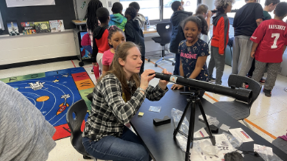
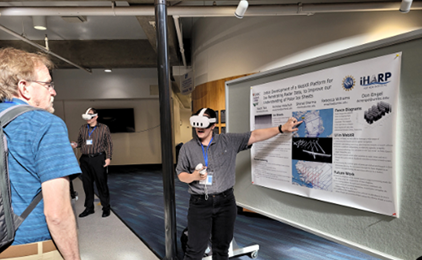
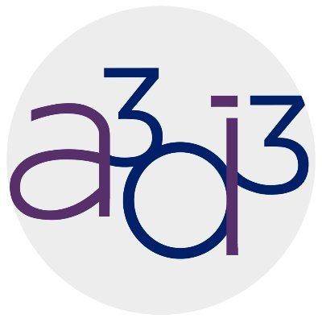
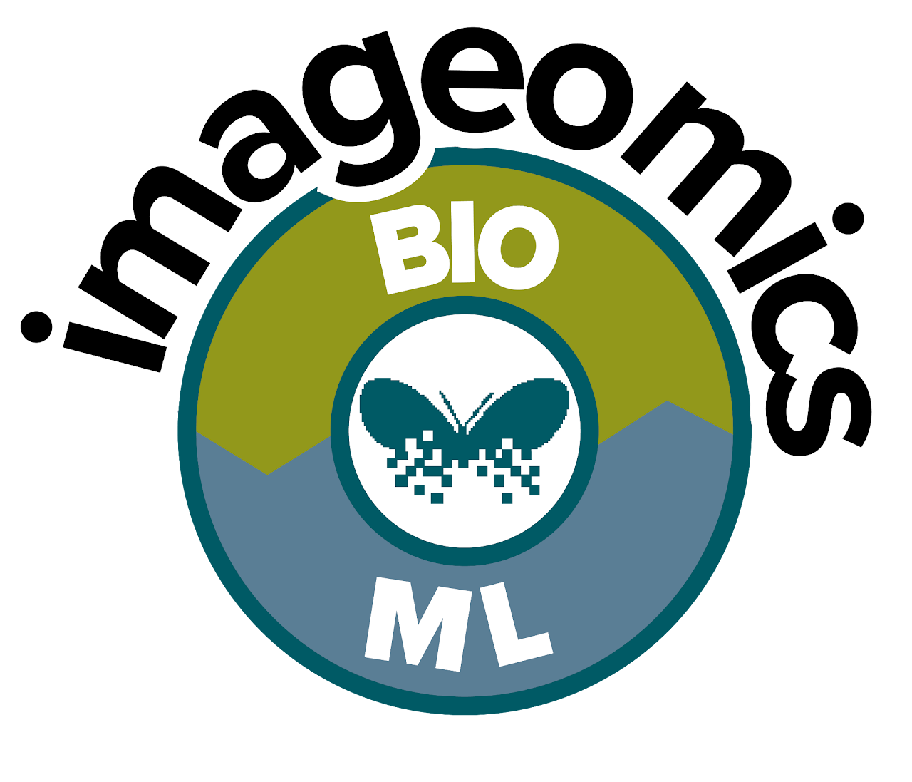

The resources provided by the HDR Institutes are organized in a searchable Baserow database to make it easy to explore what each institute offers. From educational materials and datasets to models and code, each institute contributes different kinds of resources tailored to their research and outreach missions. Whether you're a K-12 educator, researcher, or community science volunteer, you'll find materials that support your work. Not sure where to start? Check out our [getting started guide] to learn how to navigate the database and make the most of what's available.
Resources include online courses, tutorials, workshops, and camps that cover topics from machine learning and AI to geospatial analysis and biological imaging. It also includes structured training modules, handbooks, procedural guides, and team science toolkits that support research workflows, high-performance computing (HPC) training, cloud computing instruction, and collaborative problem-solving.

Provides the computational and analytical infrastructure needed for research, experimentation, and workflow execution. This includes specialized software for AI, ML, and scientific computing, code repositories, and interactive notebooks that streamline data workflows and visualization. Visualization platforms, GeoAI tools, and computing environments such as HPC clusters, cloud platforms, and analysis portals enable users to perform large-scale simulations, manage complex datasets, and execute reproducible workflows.

Foundational information and analytical frameworks that drive discovery and insight. This includes large and diverse scientific datasets spanning geospatial, biological, and ecological domains, as well as machine learning models tailored for specific research applications. By providing access to curated datasets and pre-trained models, users can explore patterns, test hypotheses, and perform computational analyses across disciplines.


A3D3 offers a collection of open-source software packages designed to support advanced, real-time AI and machine learning applications in scientific research. These include tools like HLS4ML for translating ML models to FPGA implementations, and ML4GW for gravitational-wave machine learning pipelines. A3D3 also offers publications, talks, and educational materials to support learning, outreach, and the scientific community.
ID4 offers a broad set of resources to support data-driven research and learning in materials, structures, and computational science. They curate open tutorials and training materials developed by its members, covering topics such as geometric algebra for scientific computing, graph neural networks, and molecular dynamics. In addition, the institute maintains a collection of research papers and open-source code repositories.
iHARP provides a rich set of resources to support collaborative, data-intensive polar research. They offer open science repositories, curated datasets, modeling tools, and access to advanced computing, alongside training materials and recorded events. These resources are designed to help researchers share methods, reuse data, and advance data-intensive polar science.
The I-GUIDE Platform provides an open science and collaborative environment for geospatial data-intensive convergence research and education focused on sustainability and resilience challenges and enabled by advanced cyberGIS and cyberinfrastructure. The Platform supports FAIR data principles while democratizing access to advanced cyberGIS and cyberinfrastructure and cutting-edge geospatial AI and data science capabilities.

Designed to accelerate research at the intersection of artificial intelligence and biology, the catalog highlights cutting-edge tools such as BioClip 2, KABR and the TreeOfLife-toolbox. Whether you are building new models, exploring biological patterns, or contributing to open science infrastructure, this catalog offers a centralized gateway to the tools shaping the future of AI for biology.
The HDR Ecosystem hosts a repository of educational materials from the HDR community as a resource for educators, trainers, STEM outreach volunteers, and learners. The goal is to enable anyone to find useful materials for audiences ranging from kindergarten through the general public.